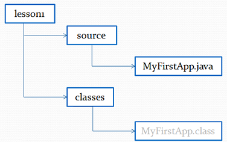
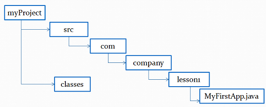
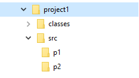

1. Компиляция программ
Для компиляции программ из командной строки используется команда javac.
Синтаксис javac:
javac [ключи] [исходники]
Чтобы получить список возможных ключей, выполните:
javac –help
Чтобы скомпилировать программу MyFirstApp, запустите компилятор, указав имя исходного файла в командной строке следующим образом:
javac MyFirstApp.java
Компилятор javac создаст файл MyFirstApp.class, содержащий версию байт-кода.
В процессе компиляции исходного кода каждый отдельный класс помещается в собственный выходной файл, называемый по имени класса и получающий расширение .class.
2. Компиляция с помощью -d.
По умолчанию компилятор записывает сгенерированный .class в тот же каталог, где находится исходный класс .java. Это хорошо для маленьких проектов, но при работе на больших проектах файлы .java и .class должны храниться отдельно.
Ключ -d позволяет указать компилятору, куда записывать сгенерированные .class файлы.
Пример 1. Компиляция с ключом -d
Например у нас есть такая структура папок:
Следующая команда, выполненная из lesson1 папки сгенерирует файл MyFirstApp.class и запишет его в папку classes (предполагаем, что MyFirstApp не содержит оператора package):
cd lesson1
javac -d classes source/MyFirstApp.java
Пример 2. Компиляция с ключом -d пакетных файлов
Теперь давайте рассмотрим пример компиляции класса com.company.lesson1.MyFirstApp, находящегося в пакете com.company.lesson1. Имеется такая структура каталогов:

Следующая команда, выполненная из src каталога, сгенерирует файл MyFirstApp.class, и запишет его в каталог classes/com/company/lesson1:
cd myProject/src
javac -d ../classes com/company/lesson1/MyFirstApp.java
Если каталог classes/com/company/lesson1 не существует, то он будет создан при компиляции.
Если же не существует каталог classes, то вы получите ошибку компиляции.
3. Запуск программы с помощью команды java.
Чтобы выполнить программу из командной строки, следует воспользоваться загрузчиком приложений Jаvа, который называется java.
Синтаксис java:
java [ключи] класс [аргументы]
Для получения списка возможных ключей, выполните:
java –help
Чтобы выполнить программу, передадим имя класса MyFirstApp (предполагаем, что MyFirstApp не содержит оператора package) в качестве аргумента командной строки:
java MyFirstApp
Если класс MyFirstApp находится в пакете, то выполняем команду:
java com.company.lesson1.MyFirstApp
Стоит заметить, что при запуске программы указывается только один класс без расширения .class.
4. Компиляция с помощью -sourcepath
Пример 3. Компиляция с ключом -sourcepath
Рассмотрим пример, в котором имеется два класса находящихся в разных пакетах - p1.Example1 и p2.Example2. Класс p1.Example1 создает экземпляр объекта p2.Example2:
package p1;
import p2.Example2;
public class Example1 {
public static void main(String[] args) {
Example2 example2 = new Example2();
System.out.print("Done!");
}
}
package p2;
public class Example2 {
}
И имеется следующая структура каталогов:

Давайте попробуем скомпилировать Example1.java так, как делали это ранее:
cd project1
javac –d classes src/p1/Example1.java
Результат компиляции:
src\p1\Example1.java:9: error: package p2 does not exist
p2.Example2 example2 = new p2.Example2();
^
src\p1\Example1.java:9: error: package p2 does not exist
p2.Example2 example2 = new p2.Example2();
^
2 errors
Ошибки произошли из-за того, что хотя javac и знал, где найти Example1.java, но он не знал, где находится Example2.java. Для решения этой проблемы используется ключ sourcepath, которая указывает каталоги, в которых компилятор должен искать иерархию исходных файлов. В нашем случае это src. Перепишем строку компиляции:
javac -d classes -sourcepath src src/p1/Example1.java
Теперь программа компилируется без ошибок. Следует обратить внимание, что javac также скомпилировал файл Example2.java, на который ссылается скомпилированный файл Example1.java.
Ключ sourcepath может содержать несколько каталогов, отделенных точкой с запятой, хотя обычно в этом нет необходимости. Например, если нужно включить как локальный каталог src, так и каталог C:\projects\anotherproject\src, где хранится исходный код для другого проекта, то используем следующую команду:
javac -d classes -sourcepath src;C:\projects\anotherproject\src
src/p1/Example1.java
Стоит заметить, что данная команда не компилирует каждый файл, найденный в какой-либо из этих иерархий. Она компилирует только файлы, на которые прямо или косвенно ссылается единичный файл .java, который мы компилируем.
5. Дополнение
cd [каталог]
или
cd [каталог/подкаталог]
Чтобы перейти из текущего подкаталога в родительский каталог применяется команда
cd..
Для перехода из текущего подкаталога в другой каталог, который не является родительским по отношению к текущему каталогу, применяется команда:
cd [\каталог]
D:
Windows+R
help
dir
Ключевые моменты: